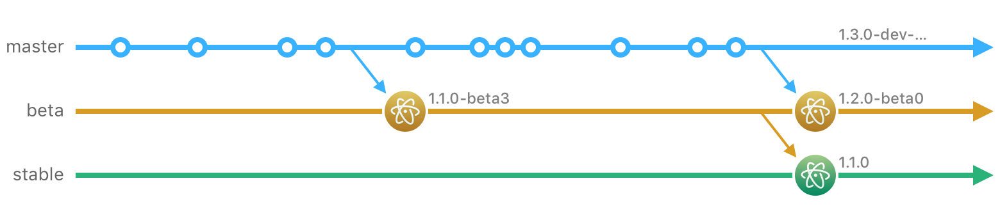
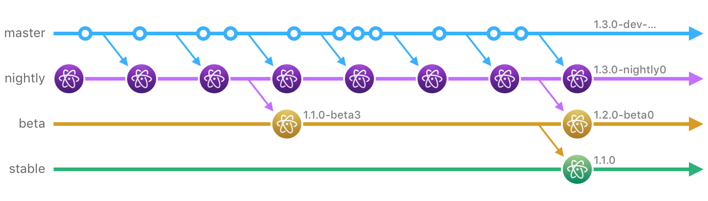

Introducing Atom Nightly Releases

Today we’re excited to introduce Atom Nightly releases! This new release channel gives you access to Atom’s latest feature improvements and bug fixes each day as they are merged into our master branch. If you want to have an influence on the future of Atom, this release channel is for you.
Atom Release Channels
Atom has been producing stable and beta releases at a monthly cadence since late 2015, enabling the team to introduce new features to the beta channel without disrupting users of the stable channel. Each month we ship the latest changes in Atom’s master branch into our new beta release and then roll the previous beta changes into the new stable release:

We’ve found that while this release model certainly helps protect Atom Stable users from regressions, it slows down the pace at which we’re able to get feedback on new features and bug fixes as they’re being implemented. Thus, we created the Atom Nightly channel to enable a much tighter feedback loop with our most intrepid early adopters.

Why Use Atom Nightly?
In the past if a user wanted to try daily improvements to Atom, they had to clone the Atom repository and run a full product build. Building Atom takes time and requires a number of development prerequisites, making this a poor experience if you merely want to try out new features. Some users figured out how to download Atom’s developer builds but there was never a way to update them without installing a newer build manually. Atom Nightly removes this friction by providing an official release channel that gets updated any day there have been changes on master.
If you’re an Atom Beta user, you’re likely using it because you want access to improvements earlier than they appear in Atom Stable releases. If this sounds like you, you’ll love Atom Nightly even more:
- You’ll get to try the latest Atom improvements every day
- Your feedback will support the daily efforts of the Atom maintainers
Caveats
You should be aware of a few limitations that impact the new nightly channel:
- On Linux, Atom (Stable, Beta and Nightly) does not support automatic updates. Please, use the official debian or rpm repositories to manually update Atom when new releases come out.
- On Windows, installing Atom Nightly and Atom Stable/Beta side-by-side is not currently supported.
Try it out Today
We hope you’ll consider trying the Atom Nightly channel. Any time you spend using Nightly releases will be greatly beneficial to Atom’s continued improvement. Since this is a bleeding-edge release it’s likely that you will hit the occasional bug, so please file an issue for anything that you come across.
Thanks again for all of your support of Atom